Lake O'Hara is the gem of the Canadian Rockies tucked just behind the famous Lake Louise. It's one of the most well-preserved areas because for the last 50 years, access is limited under 300 visitors per day. There are only a handful of options: making a reservation at the Lake O'Hara lodge, snatching one of the 30 backpacking camping sites, paying to enter a lottery for bus tickets, or hiking 22km roundtrip down the service road.
There are tons of great resources detailing how to get to Lake O'Hara, but very few describe the details of the actual experience. Here's my personalized detailed guide to visiting Lake O'Hara after you've completed the most difficult step of finding a way in.
Getting There
We live in Vancouver and opted to drive up to Yoho National Park. The closest reasonable town is Golden, just under an hour drive from the Lake O'Hara parking lot. We stayed overnight at the Cache Hotel and had a nice dinner in town. There's also a nice walk around town including the Kicking Horse pedestrian bridge.
We were assigned the 10:30AM bus into Lake O'Hara. Since we need to arrive at least 20 minutes before the bus time, we left Golden around 8AM to account for any issues we may encounter on the highway. There's a lot of constructions on Highway 1 in the area and will probably persist for a couple of years. There's not a lot of options for an early breakfast in Golden but A&W does open at 7AM, so we grabbed breakfast and coffee on the way.
Unfortunately for us, there was a major accident between the towns of Golden and Field that shut down the entire highway just as we left. We had to detour through Radium, adding 3 hours to our drive time with all the additional distance and traffic. In the unlikely event that this happens to you, take comfort in knowing the Parks Canada is probably aware of the situation and will accomodate you. We tried calling in but were relentlessly greeted by the automated system with a pre-recorded message detailing the history of Lake O'Hara. If you're interested to learn more about the lake, just call the reservation hotline. We found that emailing them was more effective and they will eventually respond. There also seem to be plenty of extra seats for the inbound afternoon busses since the majority of visitors likely prefer morning busses.
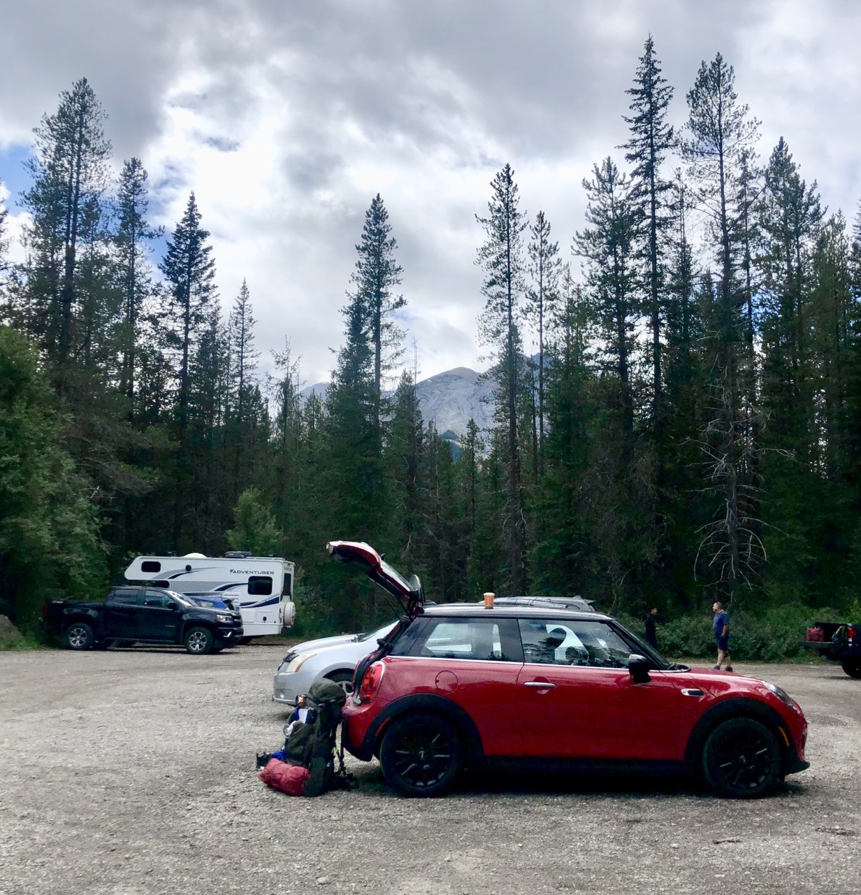
The Lake O'Hara parking lot
There are very clear signs on the highway to guide you to the large gravel parking lot. The lot was almost entirely full when we arrived and when we left so presumably it's just always filled. However, there seems to always be some spots if you look hard enough and most cars are just parallel parked on the side or in the middle of the lot, so anywhere is fine as long as you're not blocking someone else. There's a washroom by the entrance and a garbage can as well. The actual bus stop is very clearly marked and has a ton of useful information on the bulletins.
Taking the Bus
There are no staff in the parking lot, as you would probably expect. Around 20-30 minutes before the scheduled bus time, a park ranger will drive out in the Parks Canada truck followed by the iconic white Lake O'Hara bus. They confirmed reservations by checking the ID of the primary holder, so make sure your ID is easily accessible.
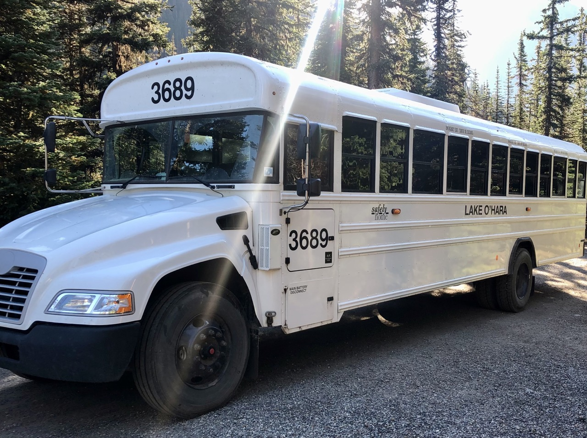
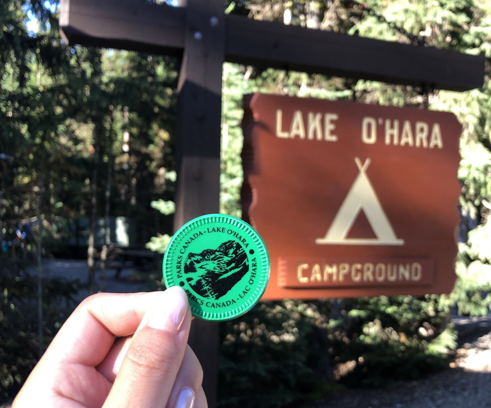
The Lake O'Hara bus and return bus token
They ask that bear spray, poles, water bladders, and anything breakable is removed from the large bag before placing them in the rear section of the bus. Most campers had Gregory or Osprey backpacking bags as their large item but some do bring a duffel bag or several small individual items. Since no trekking is involved here, most campers also bring in soft coolers with fruits and veggies and other small luxuries like marshmallows or wine. Basically, feel free to bring lots of delicious snacks for your trip since you won't need to carry it, there's a large bear locker to store it, and garbage does not need to be packed back out.
Small bags can go with you onto the bus, which itself is just a retrofitted school bus. There are seatbelts for every seat that's not mandatory to wear but does make the trip feel safer. After everyone boarded the bus, the ranger went through the essential information including rules in the park, some trail reports, and weather. The bus driver then handed out the vital bus token for the bus ride back out for the end of the trip.
The drive was not very interesting. The road is quite bumpy, so beware if you have motion sickness and try to sit towards the front. There are kilometer markings down the road and the driver communicates with the camp over a radio system on the drive. The first stop is the campground, then the bus does continue further to Le Relais (the day shelter). Lodge guests board a different bus.
The Campsite
There are 30 sites in total and this year, they operated as first come first serve. Whichever number you're assigned on your reservation is completely irrelevant. When we arrived, the ranger asked everyone to look for an empty site and come back to report the site number. Sites have to be vacated by 10:30AM but most people will be packed up way before then so it's clear which sites are empty. We opted for site number 5, which was close to the common area but does get loud in the mornings when people start getting up for breakfast. Most of the sites are pretty similar so choosing the best site is not really important. We were only ever at our tent to grab things or to sleep.
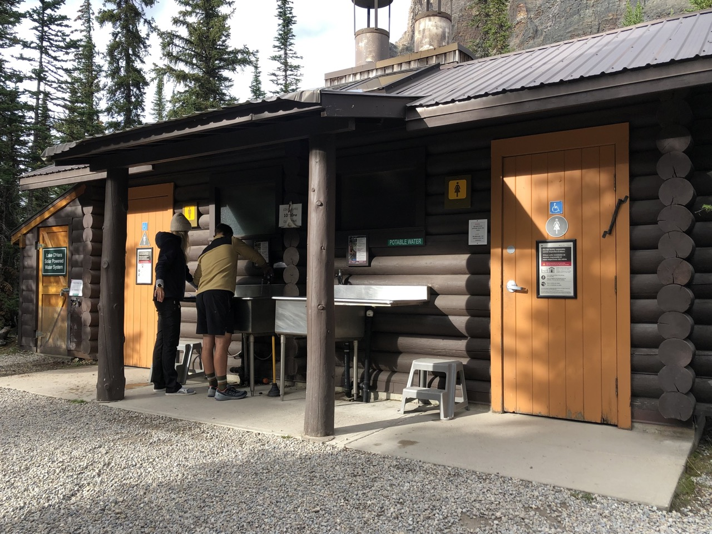
The washroom and sinks for dishwashing
Other amenities at the campsite include:
Picnic tables
Communal fire pit
Cooking shelters with picnic tables and wood stoves
Sinks with potable drinking water
Dishes can be washed in the sink and there's a coliander for sifting out food bits to make sure the sink doesn't clog. They also have nice step stools available as well. The water from the taps here is treated and drinkable so you don't need to bring any water filtration systems unless you want it for hiking.
Washrooms (outhouses)
The porta-potty style stalls are in the building. There's a small light, toilet paper, and hand sanitizer available. They're also cleaned daily.
Wood shed (with axes available)
Food storage lockers
These lockers are quite spacious. The reservation details mention that you can optionally bring a lock but it seems very pointless and we did not see any locks on any of the lockers. The detailed dimensions are on your reservation.
Garbage and recycling
Bulletin board
There are trail reports and weather reports on the bulletin board. Other hiker observations are recorded in the log book at Le Relais. There are occasionally guest speakers giving talks in the evening and the information is advertised here. There is also a map of the area and the master list of all the campers and the site they have selected.
Storage shed
After vacating the site, there is a storage shed where you can store all of your gear and food for the rest of the day. It is quite spacious and there are multiple shelves to help with organization. Basically, you can keep everything there until you're ready to leave.
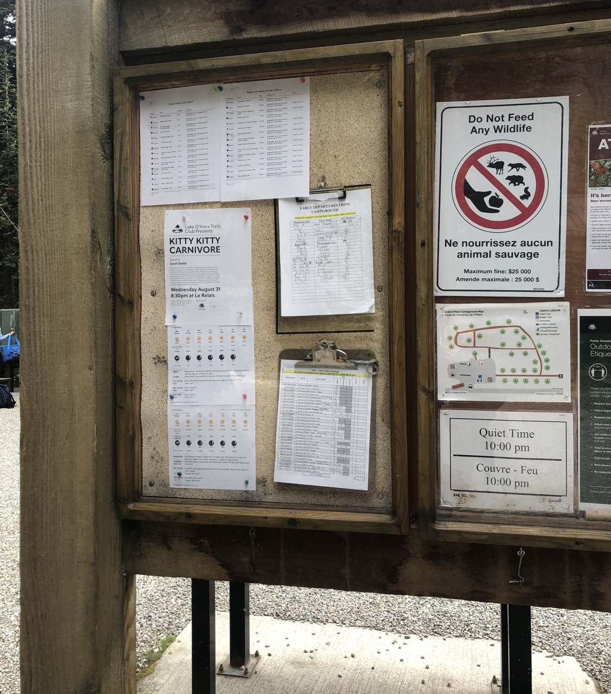
Bulletin board
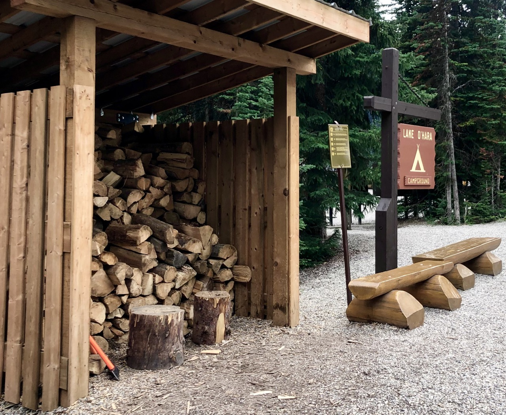
Woodshed
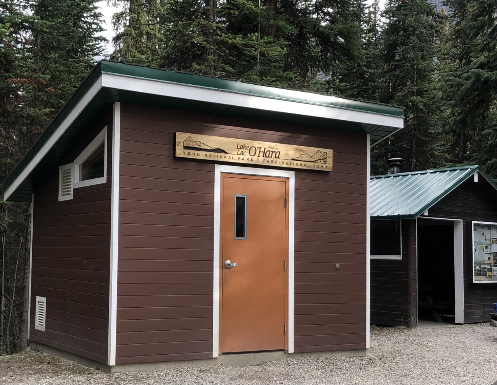
Storage shed
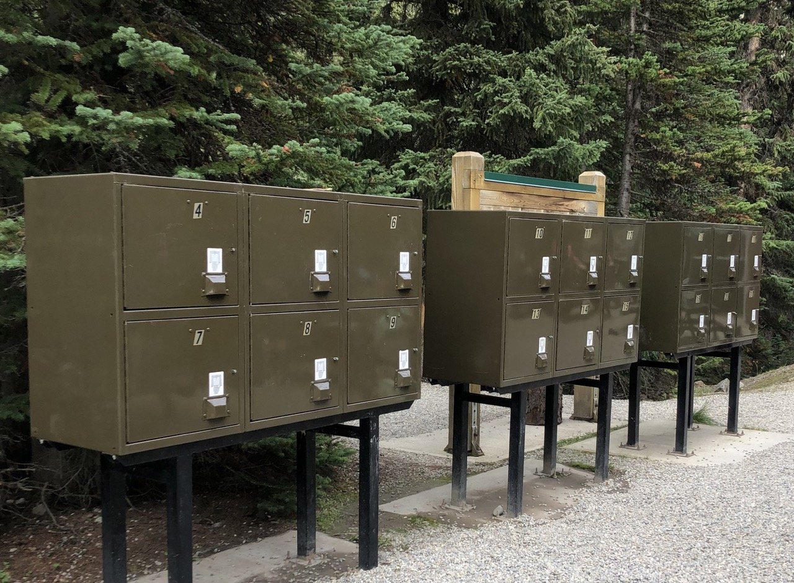
Food lockers
From the campsite, it's around 500m to the lodge area / lake / Le Relais. There is a trail you can take or you can just walk down the service road. We found the service road to be the better option but it can be scary if the bus passes by.
There's also a payphone by the lodge which will be your only connection to the outside world. You can call by connecting to the operator and paying by credit card.
Le Relais is the day shelter and offers lots of delicious snacks. The prices are quite reasonable and it's a great stop in the morning for coffee and carrot cake or at the end of hikes for some icecream and chips. They are open from around 9AM to 6:30PM and are cash only!
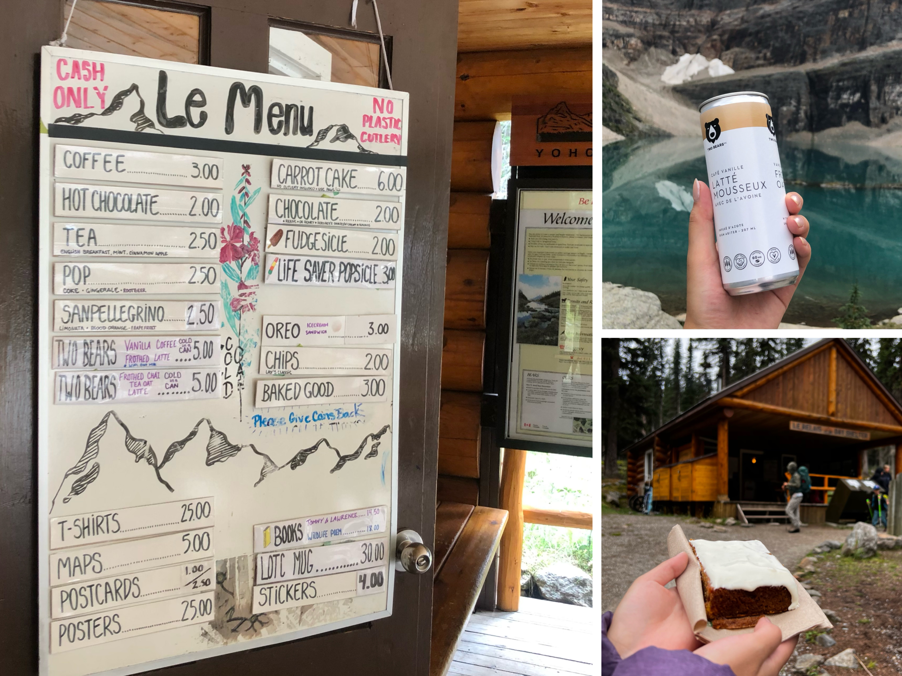
The menu at Le Relais, canned coffee, and the famous carrot cake
Hikes
The hikes at Lake O'Hara is like choosing your own adventure. There are the typical routes like the alpine circuit but you can easily mix and match segments around the lake to create your own route. Our original plan was to visit Lake McArthur on the first day and complete the circuit on our second full day, but with all the hectic detours, we didn't quite make it to Lake McArthur on this trip.
Instead, we looped around the lake after setting up our tent and visited Seven Veils Falls before cooking dinner and resting for the night. The next day, we took our time getting ready and set out on the trails at around 9:30AM. There's plenty of time to see everything around the circuit in one day so we weren't in a rush. We even stopped for carrot cake first just in case it runs out later. I also picked up a canned coffee to go.
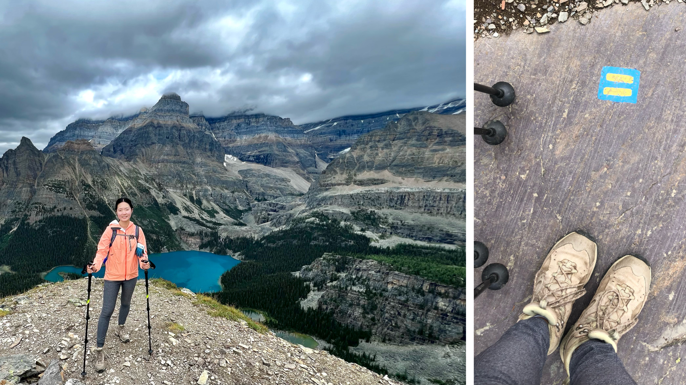
Views from the Alpine Circuit and the freshly painted alphine trail markers
Our journey was clockwise and our first stop was Lake Oesa but the whole way there was beautiful. There are views for the entire hike and you honestly just get to see so much. From Lake Oesa, we continued on the alpine route along Yukness before heading down to Hungabee and Moor Lakes. We took a short detour on the Opabin Highline which had a few nice views and then headed to Opabin Prospect for the best photo spot. There was not a single person at the prospect the whole time we were there which was very surprising to me. Finally, we went along the All Soul's Alpine Route to All Soul's Prospect and they were certainly not exaggerating about how exposed the trail becomes. This is definitely not for the faint of heart and pushed my limits very much. Personally, I'm terrified of heights but try to push myself to visit these places anyway to lessen the fear but make sure you're mentally prepared for this before taking the alpine route. This was also the steepest section of our hike so definitely also make sure you have enough energy and water to complete it. We finished our hikes around 5PM and enjoyed some more snacks from Le Relais before heading back to camp.
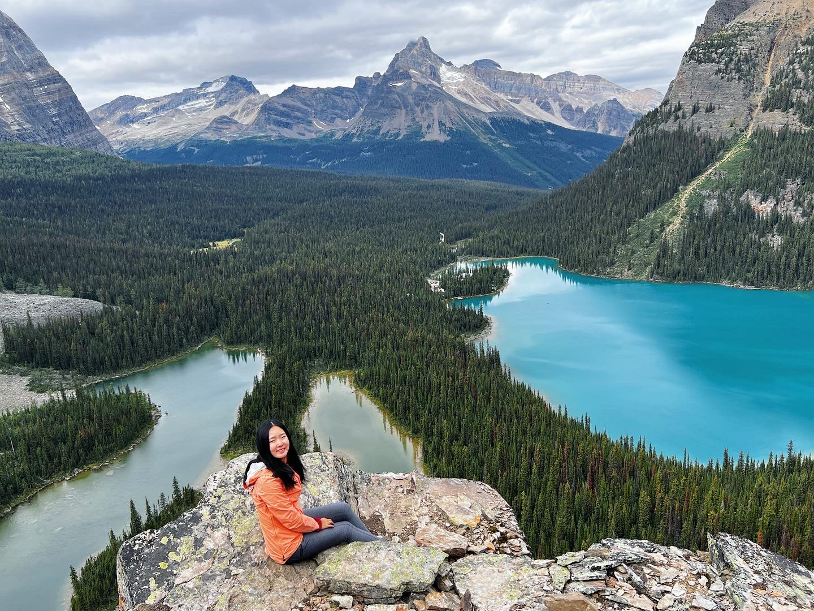
Opabin Prospect
Packing List
Camping basics, including a tent, sleeping pad, and sleeping bag, is an obvious necessity. The tent pads are relatively small, so make sure your tent will fit. Some rope is also helpful. There are lots of trees at every site and you may want to hang up things to dry. We also saw tarps at many sites, so make sure to bring one if your tent fly isn't very waterproof.
The alpine weather can be unpredictable so make sure to dress in layers and bring a rain jacket. A down jacket is also super helpful for early mornings and evenings when the temperature drops significantly. It dipped below 0 at night time in August even though day time highs were still above 20.
Proper hiking boots are necessary if you're trying to do any hike besides the lake loop. Hiking poles are definitely helpful too for any alpine route. You'll also want a small daypack to bring on the hikes and either a water bladder or water bottle to stay hydrated. Also, don't forget the 10 essentials because all the hikes are very remote.
Lots of people bring backpacking chairs, but it didn't seem to be very important since there are many picnic tables in the common area to sit at. A seat pad is more important because the benches get very cold and there is also a lot of condensation in the mornings making the seats all wet.
A headlamp is useful at night time. However, there is a small light in the washroom so it's not actually necessary unless you're walking around well after dark. A small lantern might be more useful since you can use it as a light source while sitting at a table. There are also two cooking shelters with a wood stove that's nice and warm to sit around, but very dark after the sun sets behind the mountains. Alternatively, there is a group firepit that's both bright and warm, with room for around 16 people surrounding it.
Gas, stove, pot, and utensils are important for meals, but not entirely necessary depending on your choice of food. We brought our usual set up and cooked mostly prepared meals. However, we did spot a picnic stove being used and there is always the option of the wood stove. There's a sink for washing dishes so it might be useful to bring a little bit of dish soap and some paper towels.
Toiletries. Surprisingly many girls had makeup on (as did I). I also brought dry shampoo since there are no showers.
Portable charger and all the necessary charging cables are important, especially if you're staying longer. You'll need the battery to take photos/videos of all the beautiful scenery!
Bring cash! You'll probably read this in every guide, but there is a delicious carrot cake at Le Relais that you can purchase with cash only. Le Relais also has lots of other little snacks, drinks, and souvenirs that you can purchase with cash. All the proceeds go back into the park so spend away. They also have a much more detailed map of the area available for purchase that's much better than the official Parks Canada map available online. However, it's also posted at the campground so alternatively, you can just take a picture of it.